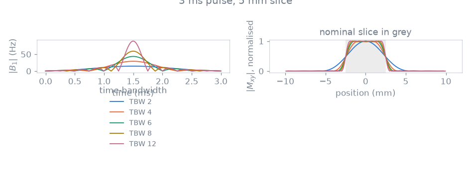
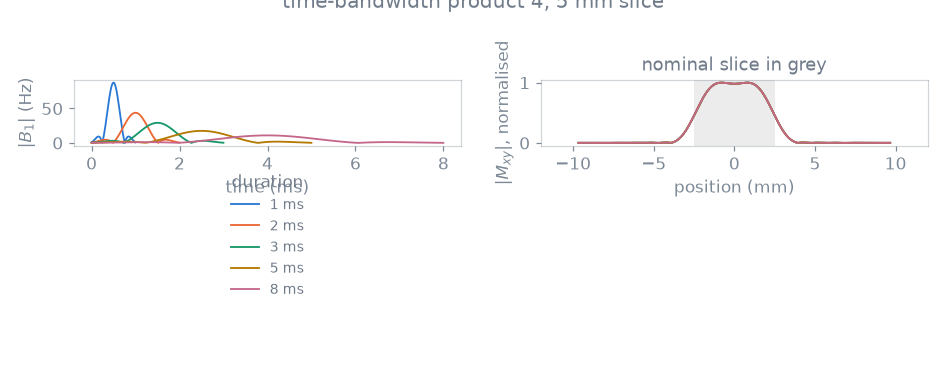
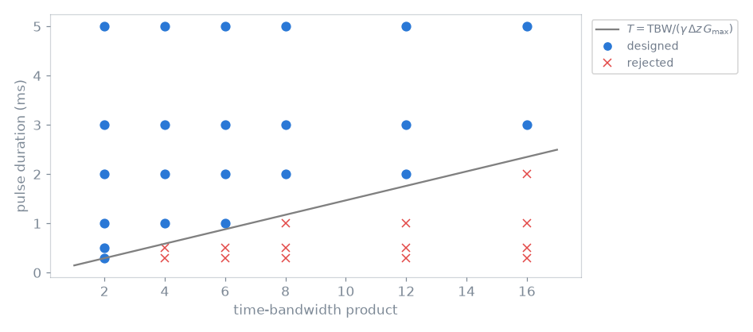

Note
Go to the end to download the full example code.
Excitation modules#
The scope of this notebook is to design slice-selective excitations with the module that solves them, and to measure what the three numbers a selective pulse is specified by — flip angle, slice thickness and time-bandwidth product — do to the slice profile, to the selection gradient and to the peak \(B_1\), and which combinations of them a gradient system admits.
A slice-selective pulse and its selection gradient are not independent: the gradient has to place the pulse’s bandwidth across the slice,
so a shorter pulse at the same thickness and the same time-bandwidth product needs a proportionally stronger selection gradient and a proportionally larger \(B_1\). The gradient amplitude limit therefore bounds the two together.
The observable is the simulated slice profile — its transition width and the ripple on either side of it — together with the boundary in the duration/time-bandwidth plane that the module refuses to design beyond.
Outline:
Simulating a design. The module, and the Bloch simulation of the pulse it holds.
The time-bandwidth product at a fixed duration. What the profile gains, and what the transmit chain pays.
The duration at a fixed time-bandwidth product. What the profile does not gain.
Designs admitted by the gradient amplitude limit. The boundary in the plane the two sweeps cross.
What a module is, and why the design is split this way, is described in Sequence modules.
import numpy as np
import pypulseqpp as pp
import pypulseqpp.sequences as design
#: Gyromagnetic ratio of the proton (Hz/T).
GAMMA = 42.576e6
THICKNESS = 5e-3
FLIP_ANGLE_DEG = 8.0
system = pp.Opts(
max_grad=32.0,
grad_unit="mT/m",
max_slew=130.0,
slew_unit="T/m/s",
adc_dead_time=10e-6,
)
Simulating a design#
The excitation module designs the pulse, its selection gradient and the
rephaser that unwinds the second half of the selection. Its sim_rf
simulates the Bloch response of the pulse it holds across off-resonance,
which under a selection gradient of amplitude selection_amplitude is the
slice profile, because a spin at position z is off-resonance by
selection_amplitude * z.
def simulate(time_bw_product, duration_s):
"""Design one excitation and simulate the profile its pulse produces."""
module = design.SpatialSelectiveExcitation(
system,
flip_angle_deg=FLIP_ANGLE_DEG,
thickness_m=THICKNESS,
duration_s=duration_s,
time_bw_product=time_bw_product,
)
magnetisation, frequency = module.sim_rf()[1:3]
profile = np.abs(magnetisation)
return {
"tbw": time_bw_product,
"duration": duration_s,
"gradient": module.selection_amplitude / GAMMA,
"position": frequency / module.selection_amplitude,
"profile": profile / profile.max(),
"time": np.arange(module.rf.signal.size) * system.rf_raster_time,
"envelope": np.abs(module.rf.signal),
"peak_b1": float(np.abs(module.rf.signal).max()),
}
Two numbers describe a profile: how far it takes to fall from the passband to the stopband, and how flat it is on either side of that transition.
def describe(simulated):
"""Transition width, passband ripple and stopband level of a profile."""
position, profile = simulated["position"], simulated["profile"]
edge = position > 0
outward, falling = position[edge], profile[edge]
def crosses(level):
index = int(np.argmax(falling < level))
return np.interp(
level,
[falling[index], falling[index - 1]],
[outward[index], outward[index - 1]],
)
passband = profile[np.abs(position) < 0.35 * THICKNESS]
stopband = profile[np.abs(position) > 1.5 * THICKNESS]
return {
**simulated,
"transition": crosses(0.1) - crosses(0.9),
"passband": float(passband.max() - passband.min()),
"stopband": float(stopband.max()),
}
The time-bandwidth product at a fixed duration#
Every design below is 3 ms long and selects the same 5 mm. The pulse has more zero crossings as the time-bandwidth product rises, and the selection gradient rises with it so that the wider bandwidth still lands on the same slice.
PRODUCTS = (2.0, 4.0, 6.0, 8.0, 12.0)
by_product = [describe(simulate(product, 3e-3)) for product in PRODUCTS]

tbw gradient transition passband stopband peak B1
2.0 3.13 mT/m 3.125 mm 0.2889 0.0041 14.7 Hz
4.0 6.26 mT/m 1.762 mm 0.1654 0.0022 29.2 Hz
6.0 9.39 mT/m 1.208 mm 0.0604 0.0014 43.5 Hz
8.0 12.53 mT/m 0.916 mm 0.0201 0.0010 59.1 Hz
12.0 18.79 mT/m 0.615 mm 0.0143 0.0006 89.0 Hz
<Figure size 946x374 with 2 Axes>
Above the smallest product the transition width falls close to inversely with it, so their product settles towards a figure set by the slice thickness rather than by the design. The passband ripple falls over the same range and the stopband stays below a percent throughout. The last column gives the corresponding increase in transmit amplitude: the peak \(B_1\) rises in proportion to the time-bandwidth product, because the same flip angle is delivered by an envelope with more structure in the same time.
The duration at a fixed time-bandwidth product#
Varying duration at fixed time-bandwidth product separates slice-profile properties from gradient amplitude and peak \(B_1\) requirements.
DURATIONS = (1e-3, 2e-3, 3e-3, 5e-3, 8e-3)
by_duration = [describe(simulate(4.0, duration)) for duration in DURATIONS]

duration_ms gradient transition passband stopband peak B1
1.0 18.79 mT/m 1.761 mm 0.1686 0.0022 87.5 Hz
2.0 9.39 mT/m 1.762 mm 0.1654 0.0022 43.8 Hz
3.0 6.26 mT/m 1.762 mm 0.1654 0.0022 29.2 Hz
5.0 3.76 mT/m 1.762 mm 0.1604 0.0022 17.5 Hz
8.0 2.35 mT/m 1.763 mm 0.1591 0.0022 10.9 Hz
<Figure size 946x374 with 2 Axes>
The five profiles lie on top of each other. The transition width is the same to three decimal places across an eightfold change of duration, and the small residual differences in the ripple follow the number of samples the pulse is written with: on a fixed RF raster a 1 ms envelope has an eighth of the samples of an 8 ms one. What the duration sets is the selection gradient and the peak \(B_1\), both of which scale as its reciprocal, and the time the repetition spends on the excitation.
Designs admitted by the gradient amplitude limit#
The two sweeps are two lines through one plane, and the amplitude limit cuts it along \(T = \mathrm{TBW} / (\gamma\, \Delta z\, G_\mathrm{max})\). A design above that line is realizable; one below it asks for a selection gradient the system does not have, and the module rejects it rather than silently widening the slice.
grid = []
for product in (2.0, 4.0, 6.0, 8.0, 12.0, 16.0):
for duration in (0.3e-3, 0.5e-3, 1e-3, 2e-3, 3e-3, 5e-3):
try:
design.SpatialSelectiveExcitation(
system,
flip_angle_deg=FLIP_ANGLE_DEG,
thickness_m=THICKNESS,
duration_s=duration,
time_bw_product=product,
)
except ValueError:
feasible = False
else:
feasible = True
grid.append({"tbw": product, "duration": duration, "feasible": feasible})

22 of 36 designs realizable, 14 rejected
The designs the module accepted are exactly those above the line. The bound is on the amplitude alone: changing the slew limit over the range a gradient system covers moves none of the points across it, because a lower slew rate lengthens the ramps on either side of the selection plateau, and so the module, without changing the amplitude the plateau has to reach.
The same plane read along its other axis gives the complementary statement: a sharper profile at a fixed slice thickness is available at any duration the gradient amplitude supports, and choosing between a long pulse and a strong gradient decides the echo time and the peak \(B_1\) rather than the profile.
Total running time of the script: (0 minutes 1.064 seconds)